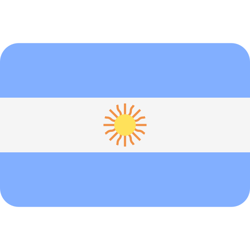

Argentina

Boas-vindas à Argentina
Localização Geográfica
Sul da América do Sul, fazendo fronteira com Chile, Bolívia, Paraguai, Brasil e Uruguai.
Geográfia
Cordilheira dos Andes, Pampas, Patagônia, Litoral.
Pratos Típicos
Asado, Empanadas, Milanesa, Mate.
Futebol
Paixão nacional, clubes famosos como Boca Juniors e River Plate.
Dados Demográficos
População de aproximadamente 45 milhões de habitantes.
Clima
Varia de árido no oeste a subtropical no norte.
Setores Industriais
Agricultura (Soja, Carne), Indústria Automotiva.
Sustentabilidade
Investimentos em energia solar e eólica.
Pontos Turísticos
Cerro Catedral - San Carlos de Bariloche.